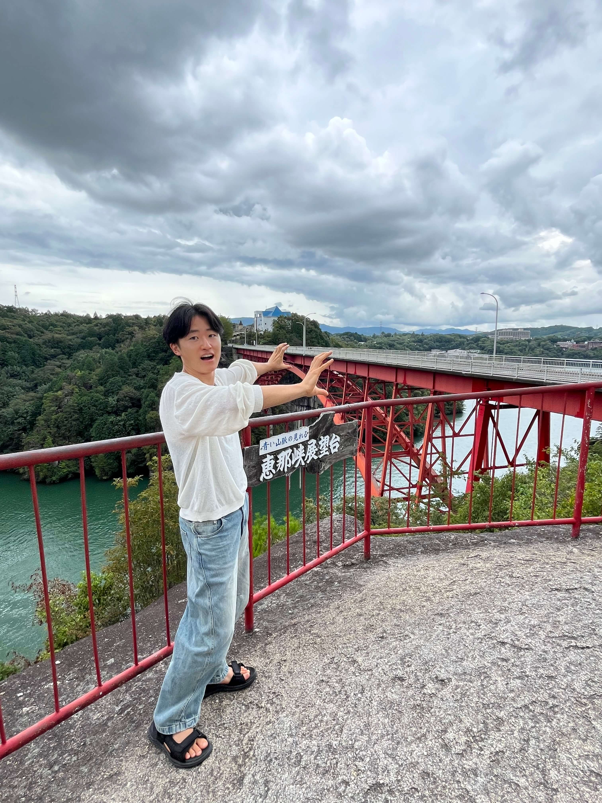
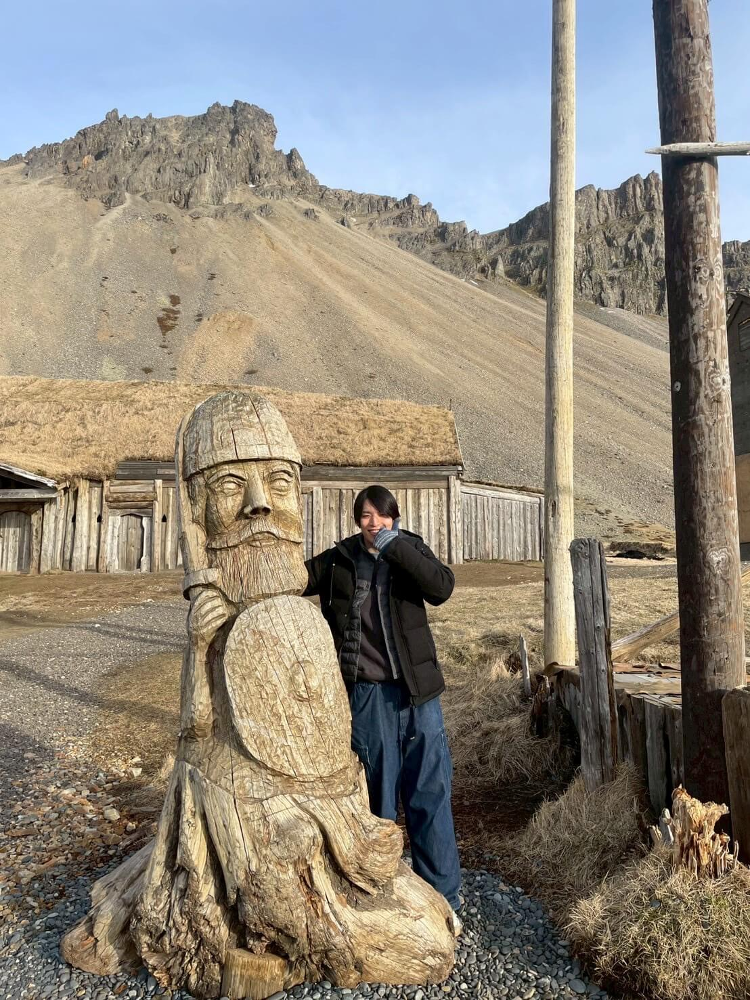
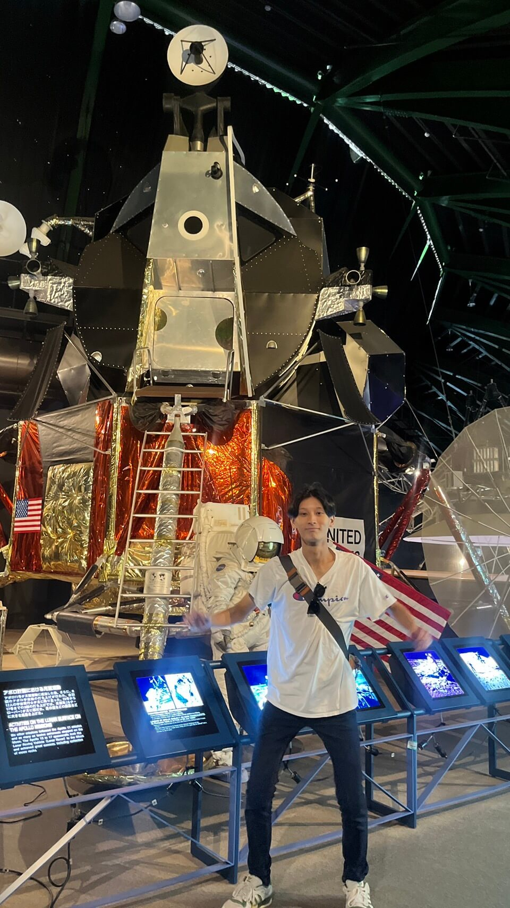
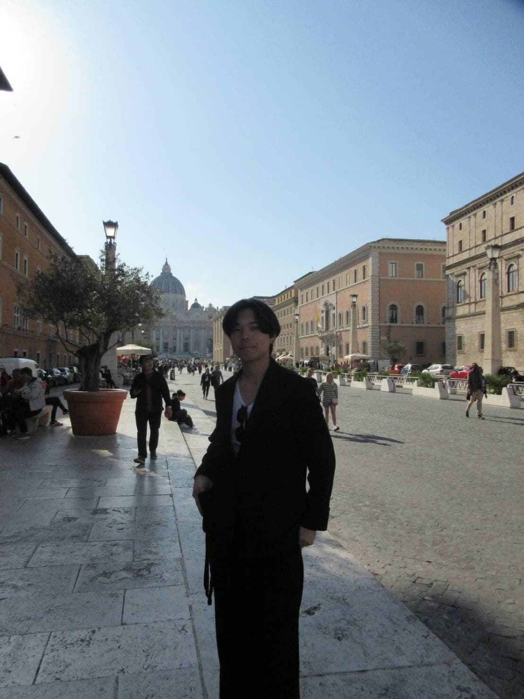

OUR TEAM
多様な専門性と熱意を持った学生たちが活動しています。

野田 悠生
役割
「地域と学生をつなぐ会 しずおかコネクト」 代表
所属
静岡大学 工学部 機械工学科光電精密コース
活動への想い
私が「地域と学生をつなぐ会 しずおかコネクト」を立ち上げた原点は、地域社会が抱える根深い課題解決、特に企業や団体における人材不足という喫緊の問題に、どうにか学生の力を役立てたいという強い使命感にあります。 静岡大学工学部に在籍する中で、学生が持つ専門的な知識や、既存の枠に囚われない新しい視点は、地域経済に大きな変革をもたらすポテンシャルを秘めていると確信しました。 しかし、その力が地域に十分に届いていない現状に、もどかしさを感じていました。本団体は、その断絶された「知」と「現場」を結びつけるハブとなることを目指しています。 学生にとっては、教室では得られない実践的な学びや成長の機会となり、地域企業にとっては、若者の活力を得て課題を乗り越える推進力となります。 私たちは、単なるボランティア活動ではなく、地域と学生が対等な立場で価値を創出する共創の仕組みを構築します。 この活動を通じて、若者が地域社会への参画意識を高め、地域企業が新たな視点を取り入れ活性化することで、静岡の未来を学生と地域が共に築き、持続的に発展していける好循環を生み出すことを目指し、日々活動を広げてまいります。
メッセージ
学生が持つ革新的な知恵と行動力を地域社会に結びつけることで、単なる支援に留まらない、具体的な企業や団体の課題解決に貢献していく所存です。 そして、この「地域との共創」のプロセスは、学生自身にとっても、教室では得られない実践的なスキルと、社会貢献を通じた意義深い成長の機会となることをお約束します。 私たちはこの活動を通じて、静岡の明るい未来を、学生と地域の皆様と共に築き上げていく覚悟です。 今後とも、地域と学生をつなぐ会 しずおかコネクトの活動への深いご理解と、温かいご協力を心よりお願い申し上げます。

前田 伊瑳武
役割
副代表、ホームページの制作、管理等
所属
静岡大学工学部機械工学学科航空宇宙学専攻
活動への想い
色々な人と出会ってみたくて参加しました！一度きりの大学生活挑戦あるのみ！この活動を通し、人々をつなぐお手伝いができればと思っています。
趣味・特技
楽器の演奏が趣味です。サークルではドラムをやっています。ルービックキューブを23秒で揃えたことがあります。
メッセージ
最後まで読んで頂きありがとうございます！この団体があなたのお役に立てることを願っています！

栗本 來嶺
役割
副理事長、ホームページの製作、管理等
所属
静岡大学 工学部 機械工学科 航空宇宙工学専攻
活動への想い
静岡・浜松の地域をより活性化していきたいと感じこの活動に参加させていただいています。
これまでの経験
留学
趣味・特技
F1観戦
メッセージ
まずは、静岡・浜松において学生と企業の懸け橋となり活動を広げていけるように邁進します。留学中ではありますが、精一杯頑張ります！

中川 昂
役割
SNS運用
所属
静岡大学 工学部 電子物質科学科 材料エネルギー化学専攻
活動への想い
この活動を通じて、学生が企業を知り、企業が学生を知るきっかけを生み出せることに大きな意義を感じています。私自身もその中で成長したいと考えています。
これまでの経験
動画編集、ドイツの大学での留学
趣味・特技
旅行、言語学習、サッカー
メッセージ
学生と企業の架け橋となれるよう、全力で活動しています！
渡邉 晴喜
役割
監事として、法人の財産状況や業務の適正性の監査を行います。
所属
静岡大学 工学部 機械工学科 光電精密コース
活動への想い
実際に知識を最大限に活かした仕事を体験することで、大学で学ぶ意義やモチベーションを見つけていきたいと考えています。その経験をより多くの学生と共有し、大学での学びに目的を持ってもらうことが、私自身の役割だと思っています。
これまでの経験
岐阜県加茂市を中心に、学生向けイベントを複数回運営・主催してきました。その経験を活かし、個人としての活動を当法人における活動にも反映させていきたいと考えています。
趣味
ソフトテニス、ランニング、スポーツ観戦など
メッセージ
「大学で学んだ知識が目に見える形となって誰かの役に立つ」という成功体験を共に分かち合い、全力でサポートいたします。少しでも興味をお持ちいただけましたら、ぜひお力添えさせていただきます！